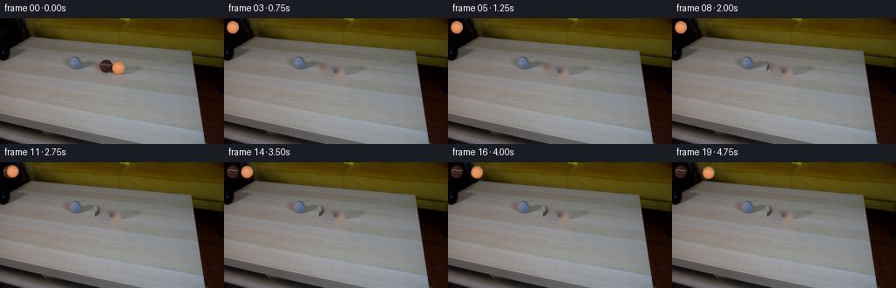
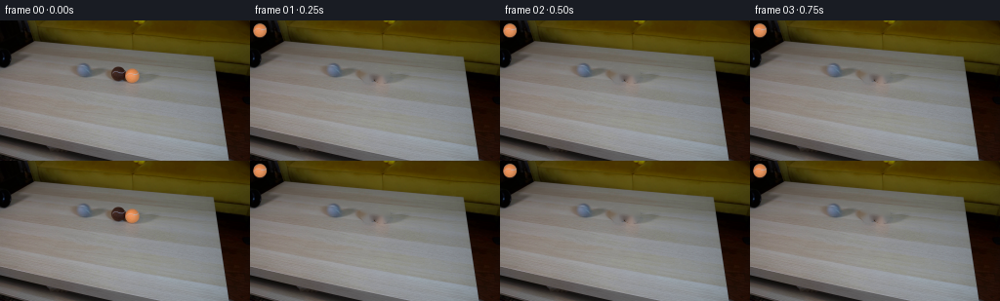
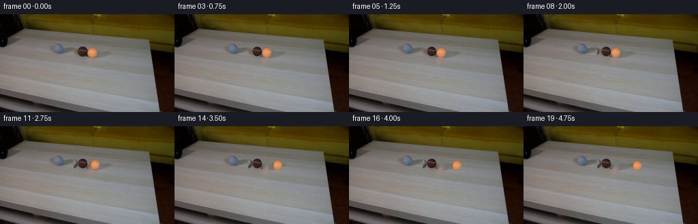
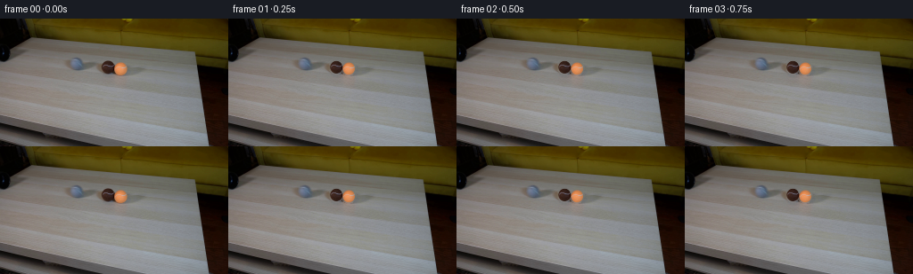

CODING AGENTS AS PIXEL WORLD MODELS
traex/DeepSeek-V4.1-Flash · 0030
点击播放 · 原生 RGB 像素
逐轮保存的候选
回放视频、检查图与代码变化。
每份候选均可单独播放。实际图片检查记录在下方工具轨迹中。
候选 01播放与检查图
点击播放 · 原生 RGB 像素


展开代码变化
--- 上一保存版本
+++ 本次保存版本
@@ -0,0 +1,191 @@
+from pathlib import Path
+
+import cv2
+import numpy as np
+from PIL import Image
+
+import artifact_io
+
+
+ROOT = Path(__file__).resolve().parent
+WIDTH, HEIGHT = 256, 144
+FRAME_COUNT = 20
+
+
+def smoothstep(value):
+ value = np.clip(value, 0.0, 1.0)
+ return value * value * (3.0 - 2.0 * value)
+
+
+def make_sprite(image, center, radii, feather=0.16):
+ cx, cy = center
+ rx, ry = radii
+ radius = int(np.ceil(max(rx, ry) + 2))
+ x0, x1 = int(np.floor(cx)) - radius, int(np.ceil(cx)) + radius + 1
+ y0, y1 = int(np.floor(cy)) - radius, int(np.ceil(cy)) + radius + 1
+ yy, xx = np.mgrid[y0:y1, x0:x1]
+ distance = np.sqrt(((xx + 0.5 - cx) / rx) ** 2 + ((yy + 0.5 - cy) / ry) ** 2)
+ alpha = 1.0 - smoothstep((distance - (1.0 - feather)) / feather)
+ rgb = image[y0:y1, x0:x1].copy()
+ return {
+ "rgb": rgb.astype(np.float32),
+ "alpha": alpha.astype(np.float32),
+ "center": np.array(center, dtype=np.float32),
+ }
+
+
+def make_gray_ball(radius=7.5, scale=5):
+ size = int(np.ceil(radius * 2.0 * scale)) + 8
+ yy, xx = np.mgrid[:size, :size].astype(np.float32)
+ center = (size - 1.0) / 2.0
+ x = (xx - center) / (radius * scale)
+ y = (yy - center) / (radius * scale)
+ rr = np.sqrt(x * x + y * y)
+ z = np.sqrt(np.clip(1.0 - rr * rr, 0.0, 1.0))
+
+ light = np.array([-0.42, -0.62, 0.66], dtype=np.float32)
+ light /= np.linalg.norm(light)
+ half = light + np.array([0.0, 0.0, 1.0], dtype=np.float32)
+ half /= np.linalg.norm(half)
+ diffuse = np.clip(x * light[0] + y * light[1] + z * light[2], 0.0, 1.0)
+ specular = np.clip(x * half[0] + y * half[1] + z * half[2], 0.0, 1.0) ** 22
+
+ noise = (
+ np.sin(xx * 1.91 + yy * 0.77)
+ + np.sin(xx * 0.43 - yy * 2.23)
+ + 0.5 * np.sin(xx * 3.11 + yy * 2.37)
+ ) / 2.5
+ fuzz = 0.035 * noise
+
+ # Two shallow, interlocking seam arcs make the small grey ball read as tennis.
+ seam_a = y - (0.13 - 0.42 * x * x + 0.055 * np.sin(5.2 * x))
+ seam_b = y - (-0.31 + 0.32 * x * x - 0.055 * np.sin(5.2 * x + 1.1))
+ seam_distance = np.minimum(np.abs(seam_a), np.abs(seam_b))
+ seam = np.exp(-(seam_distance / 0.043) ** 2) * (rr < 0.92)
+
+ shade = 0.31 + 0.70 * diffuse + 0.17 * z + fuzz
+ shade += 0.19 * specular
+ shade *= 0.83 + 0.17 * z
+ base = np.array([0.55, 0.565, 0.55], dtype=np.float32)
+ rgb = base[None, None, :] * shade[:, :, None]
+ rgb += seam[:, :, None] * np.array([0.15, 0.15, 0.135], dtype=np.float32)
+
+ edge_variation = 0.018 * np.sin(np.arctan2(y, x) * 23.0)
+ alpha = 1.0 - smoothstep((rr - (0.925 + edge_variation)) / 0.075)
+ alpha *= rr < 1.06
+ rgb = np.clip(rgb, 0.0, 1.0) * 255.0
+
+ down = cv2.resize(rgb, (size // scale, size // scale), interpolation=cv2.INTER_AREA)
+ alpha_down = cv2.resize(
+ alpha.astype(np.float32), (size // scale, size // scale), interpolation=cv2.INTER_AREA
+ )
+ return {"rgb": down.astype(np.float32), "alpha": alpha_down.astype(np.float32)}
+
+
+def paste_sprite(canvas, sprite, destination, clip_x=None):
+ dx = float(destination[0] - sprite["center"][0])
+ dy = float(destination[1] - sprite["center"][1])
+ transform = np.array([[1.0, 0.0, dx], [0.0, 1.0, dy]], dtype=np.float32)
+ rgb = cv2.warpAffine(
+ sprite["rgb"],
+ transform,
+ (WIDTH, HEIGHT),
+ flags=cv2.INTER_LINEAR,
+ borderMode=cv2.BORDER_CONSTANT,
+ borderValue=0,
+ )
+ alpha = cv2.warpAffine(
+ sprite["alpha"],
+ transform,
+ (WIDTH, HEIGHT),
+ flags=cv2.INTER_LINEAR,
+ borderMode=cv2.BORDER_CONSTANT,
+ borderValue=0,
+ )
+ if clip_x is not None:
+ xx = np.arange(WIDTH, dtype=np.float32)[None, :]
+ alpha *= smoothstep((xx - clip_x + 1.0) / 1.5)
+ alpha = alpha[:, :, None]
+ canvas[:] = canvas * (1.0 - alpha) + rgb * alpha
+
+
+def add_contact_shadow(canvas, center, radii, strength=0.10):
+ cx, cy = center
+ rx, ry = radii
+ yy, xx = np.mgrid[:HEIGHT, :WIDTH].astype(np.float32)
+ distance = ((xx + 0.5 - (cx + 0.8)) / rx) ** 2 + ((yy + 0.5 - (cy + 5.8)) / ry) ** 2
+ alpha = np.exp(-distance * 2.8) * strength
+ canvas[:] = canvas * (1.0 - alpha[:, :, None]) + np.array([72.0, 64.0, 56.0]) * alpha[:, :, None]
+
+
+def main():
+ original = np.asarray(Image.open(ROOT / "first_frame.png").convert("RGB"), dtype=np.uint8)
+ image = original.astype(np.float32)
+
+ brown_center = np.array([121.25, 54.85], dtype=np.float32)
+ brown_radii = np.array([7.55, 7.75], dtype=np.float32)
+ orange_center = np.array([135.15, 56.15], dtype=np.float32)
+ orange_radii = np.array([7.55, 7.65], dtype=np.float32)
+
+ yy, xx = np.mgrid[:HEIGHT, :WIDTH]
+ brown_region = (
+ ((xx + 0.5 - brown_center[0]) / (brown_radii[0] + 1.0)) ** 2
+ + ((yy + 0.5 - brown_center[1]) / (brown_radii[1] + 1.0)) ** 2
+ <= 1.0
+ )
+ orange_region = (
+ ((xx + 0.5 - orange_center[0]) / (orange_radii[0] + 1.0)) ** 2
+ + ((yy + 0.5 - orange_center[1]) / (orange_radii[1] + 1.0)) ** 2
+ <= 1.0
+ )
+ ball_region = (brown_region | orange_region).astype(np.uint8) * 255
+ clean_plate = cv2.inpaint(original, ball_region, 4, cv2.INPAINT_TELEA).astype(np.float32)
+
+ brown_sprite = make_sprite(image, brown_center, brown_radii)
+ orange_sprite = make_sprite(image, orange_center, orange_radii)
+ gray = make_gray_ball()
+ gray_sprite = {
+ "rgb": gray["rgb"],
+ "alpha": gray["alpha"],
+ "center": np.array([(gray["rgb"].shape[1] - 1) / 2.0, (gray["rgb"].shape[0] - 1) / 2.0]),
+ }
+
+ frames = np.empty((FRAME_COUNT, HEIGHT, WIDTH, 3), dtype=np.uint8)
+ frames[0] = original
+
+ gray_start = np.array([91.0, 53.05], dtype=np.float32)
+ gray_contact = np.array([106.55, 54.55], dtype=np.float32)
+ impact_frame = 10
+ pipe_mouth = 108.1
+
+ for frame_index in range(1, FRAME_COUNT):
+ canvas = clean_plate.copy()
+
+ travel = min(frame_index / impact_frame, 1.0)
+ gray_position = gray_start + (gray_contact - gray_start) * travel
+ if frame_index > impact_frame:
+ gray_position = gray_contact + np.array([-0.05, 0.0], dtype=np.float32) * min(
+ frame_index - impact_frame, 2
+ )
+
+ if frame_index >= 6:
+ add_contact_shadow(canvas, gray_position, (6.5, 2.0), strength=0.065)
+ paste_sprite(canvas, gray_sprite, gray_position, clip_x=pipe_mouth)
+ paste_sprite(canvas, brown_sprite, brown_center)
+
+ orange_position = orange_center.copy()
+ if frame_index > impact_frame:
+ step = frame_index - impact_frame
+ distance = 4.45 * step - 0.105 * step * step
+ orange_position[0] += distance
+ orange_position[1] += 0.055 * distance
+ add_contact_shadow(canvas, orange_position, (6.8, 2.0), strength=0.10)
+ paste_sprite(canvas, orange_sprite, orange_position)
+
+ frames[frame_index] = np.clip(np.rint(canvas), 0, 255).astype(np.uint8)
+
+ artifact_io.save(frames, ROOT)
+
+
+if __name__ == "__main__":
+ main()
候选 02播放与检查图
点击播放 · 原生 RGB 像素


展开代码变化
--- 上一保存版本
+++ 本次保存版本
@@ -30,7 +30,7 @@
return {
"rgb": rgb.astype(np.float32),
"alpha": alpha.astype(np.float32),
- "center": np.array(center, dtype=np.float32),
+ "center": np.array([cx - x0, cy - y0], dtype=np.float32),
}
可观测工具轨迹
实际执行的命令与返回图片。
命令 1exit 0
/bin/bash -c "sed -n '1,240p' prompt.txt"
命令 2exit 0
/bin/bash -c "sed -n '1,260p' GENERATION_RULES.md"
命令 3exit 1
/bin/bash -c "find . -maxdepth 2 -type f -printf '%p %s bytes\\n' | sort && printf '\\nTools:\\n' && command -v ffmpeg && command -v ffprobe && python3 - <<'PY' import importlib.util for m in ['PIL','numpy','cv2','imageio','scipy']: print(m, bool(importlib.util.find_spec(m))) PY"
命令 4exit 0
/bin/bash -c "sed -n '1,260p' artifact_io.py"
命令 5exit 0
/bin/bash -c "python3 - <<'PY'
from PIL import Image
import numpy as np
im=np.array(Image.open('first_frame.png').convert('RGB'))
print(im.shape, im.dtype, im.min(), im.max(), im.mean(axis=(0,1)))
# summarize coarse color blocks and row/column changes
for y in range(0,144,12):
row=im[y]
print('y',y,'mean',row.mean(axis=0).round(1), 'samples', [tuple(row[x]) for x in range(0,256,32)])
PY"命令 6exit 0
/bin/bash -c "python3 - <<'PY'
from PIL import Image
im=Image.open('first_frame.png')
print(im.mode, im.size, im.getextrema())
PY"命令 7exit 0
/bin/bash -c "python3 - <<'PY'
from PIL import Image
import numpy as np
im=np.array(Image.open('first_frame.png').convert('RGB')).astype(float)
# downsample 2x2 means to 128x72, categorize
h,w,_=im.shape
sm=im.reshape(72,2,128,2,3).mean((1,3))
R,G,B=sm.transpose(2,0,1)
mx=sm.max(2); mn=sm.min(2); lum=sm.mean(2)
sat=(mx-mn)/np.maximum(mx,1)
# categories
cat=np.full((72,128),' ')
cat[(lum<25)]='@'
cat[(lum>=25)&(lum<55)]='#'
cat[(lum>=55)&(lum<85)]='O' # dim mid
cat[(lum>=85)&(lum<120)&(sat<.18)]='g'
cat[(lum>=120)&(sat<.18)]='G'
# yellows/browns background
cat[(R>G*1.05)&(G>B*1.8)&(lum>=45)]='y'
# orange red
cat[(R>1.25*G)&(G>1.2*B)&(lum>=65)]='r'
# brown dark red
cat[(R>G*1.15)&(R>B*1.6)&(lum>=25)&(lum<70)]='b'
# cyan/blue-gray
cat[(B>R*1.08)&(B>G*1.02)&(lum>=55)]='c'
for y in range(72):
print(f'{y*2:03d} '+''.join(cat[y]))
PY"命令 8exit 0
/bin/bash -c "python3 - <<'PY' import importlib.util for m in ['PIL','numpy','cv2','imageio','scipy','sklearn']: print(m, bool(importlib.util.find_spec(m))) PY command -v ffmpeg || true command -v ffprobe || true command -v convert || true"
命令 9exit 0
/bin/bash -c "python3 - <<'PY'
from PIL import Image
import numpy as np
im=np.array(Image.open('first_frame.png')).astype(float)
# key candidates in crop x 90:210 y35:95 print colors at grid every 5 px
for y in range(38,96,5):
vals=[]
for x in range(90,211,10):
r,g,b=im[y,x].astype(int)
vals.append(f'{x}:({r:3},{g:3},{b:3})')
print(y,' '.join(vals))
PY"命令 10exit 0
/bin/bash -c "python3 - <<'PY'
from PIL import Image
import numpy as np
im=np.array(Image.open('first_frame.png')).astype(float)
# identify distinct object candidates
R,G,B=im.transpose(2,0,1)
lum=im.mean(2)
# print orange bright mask bounds/comp
for name,mask in {
'orange':(R>150)&(R>G*1.35)&(G>B*1.2),
'brown':(R<110)&(R>45)&(G<60)&(B<50)&(R>G*1.2),
'greenish':(G>R*1.03)&(B>R*1.08)&(lum<120),
'black':(lum<30),
}.items():
ys,xs=np.where(mask)
print(name, len(xs), (xs.min(),ys.min(),xs.max(),ys.max()) if len(xs) else None)
# binned positions
if len(xs):
import collections
print(sorted(collections.Counter(zip(ys//4,xs//4)).items(), key=lambda z:-z[1])[:15])
PY"命令 11exit 0
/bin/bash -c "python3 - <<'PY'
from PIL import Image
import numpy as np
im=np.array(Image.open('first_frame.png')).astype(float)
R,G,B=im.transpose(2,0,1); lum=im.mean(2)
# RGB ascii in crop x100:160 y40:70; dominant color symbols
# print 1-char nearest representative
reps=[((220,135,75),'O'),((160,85,60),'o'),((70,50,40),'B'),((35,30,28),'K'),((125,125,122),'w'),((145,145,145),'W'),((95,90,85),'d'),((180,180,178),'L')]
for y in range(42,69):
s=''
for x in range(104,158):
p=im[y,x]
k=min(reps,key=lambda z: np.sum((p-np.array(z[0]))**2))[1]
s+=k
print(f'{y:02d} {s}')
PY"命令 12exit 0
/bin/bash -c "python3 - <<'PY'
from PIL import Image
import numpy as np
im=np.array(Image.open('first_frame.png')).astype(float)
R,G,B=im.transpose(2,0,1); lum=im.mean(2)
reps=[((220,135,75),'O'),((160,85,60),'o'),((70,50,40),'B'),((35,30,28),'K'),((125,125,122),'w'),((145,145,145),'W'),((95,90,85),'d'),((180,180,178),'L')]
for y in range(42,70):
s=''
for x in range(80,205):
p=im[y,x]
k=min(reps,key=lambda z: np.sum((p-np.array(z[0]))**2))[1]
s+=k
print(f'{y:02d} {s}')
PY"命令 13exit 0
/bin/bash -c "python3 - <<'PY'
from PIL import Image
import numpy as np
im=np.array(Image.open('first_frame.png')).astype(np.float32)
# print a magnified crop by recoloring to nearest named colors and save via PIL only local operation
crop=im[38:72,74:206]
# nearest palette with high contrast labels
pal=np.array([[225,137,76],[181,102,67],[104,76,61],[40,34,31],[120,119,115],[147,147,147],[87,83,78],[185,185,183],[83,96,114]],np.float32)
names='ORANGE ORANGE2 BROWN BLACK DARKG MIDG DIM LIGHT BLUEGRAY'.split()
d=((crop[:,:,None,:]-pal[None,None,:,:])**2).sum(3)
lab=d.argmin(2)
out=pal[lab].astype(np.uint8)
Image.fromarray(out).resize((528,136),Image.Resampling.NEAREST).save('.tmp/object_crop.png')
print('.tmp/object_crop.png')
PY"命令 14exit 0
/bin/bash -c "python3 - <<'PY'
import cv2, numpy as np
from PIL import Image
im=np.array(Image.open('first_frame.png')).astype(np.float32)
# inspect dark connected components in central area
lum=im.mean(2)
for thresh in [35,50,65,80]:
mask=((lum<thresh)&(np.indices(lum.shape)[1]>40)&(np.indices(lum.shape)[1]<180)&(np.indices(lum.shape)[0]>35)&(np.indices(lum.shape)[0]<80)).astype(np.uint8)
n,l,st,cen=cv2.connectedComponentsWithStats(mask,8)
comps=sorted([(s[4],s[0],s[1],s[2],s[3]) for s in st[1:] if s[4]>=5],reverse=True)
print('threshold',thresh,comps[:10])
# Orange region exact mask and comps
R,G,B=im.transpose(2,0,1)
mask=((R>130)&(R>1.3*G)&(G>1.15*B)&(np.indices(R.shape)[0]>35)&(np.indices(R.shape)[0]<90)).astype(np.uint8)
n,l,st,cen=cv2.connectedComponentsWithStats(mask,8)
print('orange',[(s[4],s[0],s[1],s[2],s[3]) for s in st[1:] if s[4]>=5])
PY"命令 15exit 0
/bin/bash -c "python3 - <<'PY'
from PIL import Image
import numpy as np
im=np.array(Image.open('first_frame.png')).astype(np.float32)
R,G,B=im.transpose(2,0,1); lum=im.mean(2); Y,X=np.indices(lum.shape)
# Save 4x nearest full image; permitted local image operation, for spatial inspection
Image.fromarray(im.astype(np.uint8)).resize((1024,576),Image.Resampling.NEAREST).save('.tmp/full4.png')
# cropped ball and pipe with contrast upscale
for name,(x0,y0,x1,y1) in {'ballpipe':(40,38,175,82),'table':(0,20,256,120),'balls':(108,44,148,68)}.items():
c=im[y0:y1,x0:x1].astype(np.uint8)
Image.fromarray(c).resize(((x1-x0)*6,(y1-y0)*6),Image.Resampling.NEAREST).save(f'.tmp/{name}6.png')
print(name,(x0,y0,x1,y1), 'mean', c.mean((0,1)).round(1))
PY"命令 16exit 0
/bin/bash -c "python3 - <<'PY'
from PIL import Image
import numpy as np
im=np.array(Image.open('first_frame.png')).astype(float)
# print colors around dark object / pipe at exact grid and find local std texture
for y in range(48,68):
vals=[]
for x in range(74,128,4):
p=im[y,x].astype(int); vals.append(f'{x}:{p[0]:03},{p[1]:03},{p[2]:03}')
print(y,' '.join(vals))
PY"命令 17exit 0
/bin/bash -c "python3 - <<'PY'
import cv2, numpy as np
from PIL import Image
im=np.array(Image.open('first_frame.png')).astype(float)
lum=im.mean(2); Y,X=np.indices(lum.shape)
mask=((lum<100)&(X>=60)&(X<135)&(Y>=45)&(Y<65)).astype(np.uint8)*255
n,l,st,cen=cv2.connectedComponentsWithStats((mask>0).astype(np.uint8),8)
print([(s.tolist(),c.tolist()) for s,c in zip(st[1:],cen[1:]) if s[4]>20])
# exact rows dark extents
for y in range(45,65):
xs=np.where(lum[y]<95)[0]
# contiguous runs within range
runs=[]
for x in xs:
if x<50 or x>140: continue
if not runs or x>runs[-1][-1]+1:runs.append([x])
else:runs[-1].append(x)
print(y,[(r[0],r[-1]) for r in runs if len(r)>=2])
PY"命令 18exit 0
/bin/bash -c "python3 - <<'PY'
from PIL import Image
import numpy as np
im=np.array(Image.open('first_frame.png')).astype(float)
R,G,B=im.transpose(2,0,1)
# orange ranges
for y in range(44,68):
om=(R[y]>125)&(R[y]>G[y]*1.25)&(G[y]>B[y]*1.12)
xs=np.where(om)[0]; xs=xs[(xs>100)&(xs<160)]
runs=[]
for x in xs:
if not runs or x>runs[-1][-1]+1:runs.append([x])
else:runs[-1].append(x)
print('o',y,[(r[0],r[-1]) for r in runs if len(r)>=1])
print('brown rows x ranges based saturation/dark')
for y in range(43,68):
# brown mask: dark reddish; exclude pipe x<110
bm=(R[y]<115)&(R[y]>35)&(R[y]>G[y]*1.2)&(G[y]>B[y]*1.05)
xs=np.where(bm)[0]; xs=xs[(xs>=109)&(xs<135)]
runs=[]
for x in xs:
if not runs or x>runs[-1][-1]+1:runs.append([x])
else:runs[-1].append(x)
print(y,[(r[0],r[-1]) for r in runs if len(r)>=1])
PY"命令 19exit 0
/bin/bash -c "python3 - <<'PY'
from PIL import Image
import numpy as np
im=np.array(Image.open('first_frame.png')).astype(np.int16)
# Print exact R,G,B for rows around both balls, symbols:
# K dark, B brown, O orange, w neutral light, d neutral dark, b blue-gray
for y in range(44,66):
out=[]
for x in range(106,149,2):
p=im[y,x]
r,g,b=p
if r>150 and r>g*1.25 and g>b*1.1:sym='O'
elif r>g*1.15 and r>b*1.3 and r<155:sym='B'
elif b>r*1.12:sym='c'
elif (r+g+b)/3<90:sym='K'
elif (r+g+b)/3<120:sym='d'
else:sym='w'
out.append(sym)
print(f'{y:02d}', ''.join(out))
PY"命令 20exit 0
/bin/bash -c "python3 - <<'PY'
from PIL import Image
import numpy as np
im=np.array(Image.open('first_frame.png')).astype(float)
# Look at x extents/color for rows 44-72 to determine pipe bounds
for y in range(40,73):
p=im[y]
# low luminance in x 60:180
lum=p.mean(1)
xs=np.where((lum<105)&(np.arange(256)>55)&(np.arange(256)<180))[0]
runs=[]
for x in xs:
if not runs or x>runs[-1][-1]+1:runs.append([x])
else:runs[-1].append(x)
print(y,[(r[0],r[-1],round(float(lum[r[0]:r[-1]+1].mean()),1)) for r in runs if len(r)>1])
PY"命令 21exit 0
/bin/bash -c "python3 - <<'PY'
import cv2, numpy as np
from PIL import Image
im=np.array(Image.open('first_frame.png')).astype(np.float32)
# compute masks for brown and orange with Lab color distance using manually sampled means
# print median/percentiles in balls
for name,box in {'brown':(112,47,130,63),'orange':(128,49,143,64),'pipe':(85,49,109,59),'table':(60,70,180,110)}.items():
x0,y0,x1,y1=box;c=im[y0:y1,x0:x1].reshape(-1,3)
print(name,'mean',c.mean(0).round(1),'median',np.median(c,0),'p10',np.percentile(c,10,0).round(0),'p90',np.percentile(c,90,0).round(0))
# use local color distribution of ball masks based on HSV thresholds, print ellipse fit
hsv=cv2.cvtColor(im.astype(np.uint8),cv2.COLOR_RGB2HSV)
for name,mask in {
'brown':((np.indices(hsv.shape[:2])[0]>44)&(np.indices(hsv.shape[:2])[0]<67)&(np.indices(hsv.shape[:2])[1]>108)&(np.indices(hsv.shape[:2])[1]<132)&(hsv[:,:,1]>50)&(hsv[:,:,2]<150)),
'orange':((np.indices(hsv.shape[:2])[0]>44)&(np.indices(hsv.shape[:2])[0]<67)&(np.indices(hsv.shape[:2])[1]>125)&(np.indices(hsv.shape[:2])[1]<148)&(hsv[:,:,0]>3)&(hsv[:,:,0]<30)&(hsv[:,:,1]>70)),
}.items():
ys,xs=np.where(mask)
print(name,'n',len(xs),'bbox',xs.min(),ys.min(),xs.max(),ys.max(),'mean',xs.mean(),ys.mean())
if len(xs)>=5:
pts=np.column_stack([xs,ys]).astype(np.float32)
if len(xs)>=5: print('ellipse',cv2.fitEllipse(pts))
PY"命令 22exit 0
/bin/bash -c "python3 - <<'PY'
from PIL import Image
import numpy as np
im=np.array(Image.open('first_frame.png')).astype(np.float32)
# extract 2x maps around pipe and ball, save individual crops to see patterns through pixel statistics
for name,(x0,y0,x1,y1) in {'pipe':(70,42,112,64),'brown':(108,44,130,68),'orange':(126,46,145,67)}.items():
c=im[y0:y1,x0:x1].astype(np.uint8)
Image.fromarray(c).resize(((x1-x0)*12,(y1-y0)*12),Image.Resampling.NEAREST).save(f'.tmp/{name}_nearest.png')
# bicubic too
Image.fromarray(c).resize(((x1-x0)*12,(y1-y0)*12),Image.Resampling.BICUBIC).save(f'.tmp/{name}_smooth.png')
print(name, 'saved')
PY"命令 23exit 0
/bin/bash -c "python3 - <<'PY'
from PIL import Image
import numpy as np
im=np.array(Image.open('first_frame.png')).astype(float)
# Print RGB matrix labels for brown/ball center every pixel coarse chars. Need identify where orange is exactly and brown.
for y in range(45,66):
print(f'{y:02d}',end=' ')
for x in range(108,145):
r,g,b=im[y,x]
# hue/color classes
if r>150 and r>g*1.3 and g>b*1.15: c='O'
elif r>120 and r>g*1.35 and g>b*1.2: c='o'
elif r>g*1.25 and g>b*1.1 and r>60: c='B'
elif r+g+b<170:c='K'
elif b>r*1.10:c='c'
elif r+g+b<280:c='d'
else:c='w'
print(c,end='')
print()
PY"命令 24exit 0
/bin/bash -c "python3 - <<'PY'
from PIL import Image
import numpy as np
im=np.array(Image.open('first_frame.png')).astype(float)
# summarize gradient edge and likely background plane via median by y, identify shadows
for y in [60,62,64,66,68,70,72,74,76,78,80,82,84,86,88,90]:
row=im[y]
# robust median of x 40:220 excluding object? median all
print(y,'median',np.median(row,0).astype(int),'q10',np.percentile(row,10,axis=0).astype(int),'q90',np.percentile(row,90,axis=0).astype(int))
PY"命令 25exit 0
/bin/bash -c "python3 - <<'PY'
from PIL import Image
import numpy as np
im=np.array(Image.open('first_frame.png')).astype(np.float32)
# Average backgrounds in strips around objects to estimate table color. Print exact horizontal line from x0 to x255 at y=70 every 4 px.
for y in [52,58,64,70,76,82,90,100,110]:
vals=[]
for x in range(0,256,8):
r,g,b=im[y,x].astype(int); vals.append(f'{r:3},{g:3},{b:3}')
print(y,' | '.join(vals))
PY"命令 26exit 0
/bin/bash -c "python3 - <<'PY'
from PIL import Image
import numpy as np
im=np.array(Image.open('first_frame.png')).astype(np.int16)
# print mean and std in 8x8 tiles for relevant area. Table texture noise std is useful
for y0 in range(56,108,8):
print('y',y0)
for x0 in range(64,208,16):
c=im[y0:y0+8,x0:x0+16]
print(f'{x0:3}:{c.mean():5.1f}/{c.std():4.1f}',end=' ')
print()
PY"命令 27exit 0
/bin/bash -c "python3 - <<'PY'
from PIL import Image
import numpy as np
im=np.array(Image.open('first_frame.png')).astype(np.float32)
# Need understand which is orange and brown in prompt. Orange obvious at x134. Brown x120. Gray ball hidden in pipe presumably.
# inspect ball lighting: print RGB of ball pixels center rows
for y in range(48,64):
print('y',y,'brown',[(x,tuple(im[y,x].astype(int))) for x in range(114,128,3)],'orange',[(x,tuple(im[y,x].astype(int))) for x in range(129,142,3)])
PY"命令 28exit 0
/bin/bash -c "python3 - <<'PY'
from PIL import Image
import numpy as np
im=np.array(Image.open('first_frame.png')).astype(np.int16)
# determine mask of foreground objects via local deviation from row median, excluding known border
# print image gradients edge map in crop as ascii of gradient magnitude
imf=im.astype(np.float32)
gx=np.zeros(im.shape[:2]);gy=np.zeros(im.shape[:2])
gx[:,1:-1]=np.abs(imf[:,2:]-imf[:,:-2]).mean(2); gy[1:-1]=np.abs(imf[2:]-imf[:-2]).mean(2)
g=np.maximum(gx,gy)
for y in range(42,68):
s=''
for x in range(60,155):
v=g[y,x]
s += ' ' if v<5 else '.' if v<10 else ':' if v<20 else '*' if v<40 else '#' if v<70 else '@'
print(f'{y:02d} {s}')
PY"命令 29exit 0
/bin/bash -c "python3 - <<'PY'
from PIL import Image
import numpy as np
im=np.array(Image.open('first_frame.png')).astype(np.float32)
# Analyze colors around brown ball edge x110-132 y46-64 using HSV quantized map
hsv=__import__('cv2').cvtColor(im.astype(np.uint8),__import__('cv2').COLOR_RGB2HSV)
for y in range(46,65):
print(f'{y:02d}',end=' ')
for x in range(106,148):
h,s,v=hsv[y,x]
if s<25: c=' ' if v>120 else '.' if v>75 else ':'
elif h<5 or h>175: c='R' if v<110 else 'r'
elif h<12:c='B' if v<130 else 'b'
elif h<22:c='O' if v<200 else 'o'
elif h<35:c='Y'
elif h<85:c='G'
elif h<130:c='C'
else:c='P'
print(c,end='')
print()
PY"命令 30exit 0
/bin/bash -c "python3 - <<'PY'
from PIL import Image
import numpy as np
im=np.array(Image.open('first_frame.png')).astype(float)
# sample blue-gray vertical object near x84-92 y44-58
for y in range(42,62):
print(y, [(x,tuple(im[y,x].astype(int))) for x in range(82,94,2)])
PY"命令 31exit 0
/bin/bash -c "python3 - <<'PY'
from PIL import Image
import numpy as np
im=np.array(Image.open('first_frame.png')).astype(float)
# derive per-pixel chroma and show neutral gray pipe candidate. inspect rows y44-59 x66-112 with luminance chars
for y in range(40,62):
s=''
for x in range(64,113):
r,g,b=im[y,x]; l=(r+g+b)/3
sat=(max(r,g,b)-min(r,g,b))/max(r,g,b,1)
if sat>.18:c='B' # blueish
elif l<60:c='@'
elif l<90:c='#'
elif l<115:c='*'
elif l<135:c='+'
elif l<150:c='-'
else:c='.'
s+=c
print(f'{y:02d} {s}')
PY"命令 32exit 0
/bin/bash -c 'python3 generate.py'
命令 33exit 0
/bin/bash -c "python3 - <<'PY'
import json, numpy as np
from pathlib import Path
p=json.loads(Path('task_spec.json').read_text()) if Path('task_spec.json').exists() else {}
print(p)
z=np.load('pixels.npz')['pixels']
print('pixels',z.shape,z.dtype,z.min(),z.max())
print('html',Path('index.html').stat().st_size)
PY"命令 34exit 0
/bin/bash -c "python3 - <<'PY'
from PIL import Image
import numpy as np
orig=np.array(Image.open('first_frame.png').convert('RGB'))
f=np.array(Image.open('frames/00.png').convert('RGB'))
print('first exact:', np.array_equal(orig,f))
for i in [0,1,4,7,10,11,12,14,17,19]:
im=np.array(Image.open(f'frames/{i:02d}.png'))
print(i, 'mean',im.mean((0,1)).round(2), 'diff', np.abs(im.astype(int)-orig.astype(int)).mean().round(2))
# report changed pixel bbox by frame
for i in [1,4,7,10,11,14,19]:
im=np.array(Image.open(f'frames/{i:02d}.png')).astype(int)
d=np.abs(im-orig.astype(int)).max(2)>8
ys,xs=np.where(d)
print(i, 'bbox', (xs.min(),ys.min(),xs.max(),ys.max()), 'n',d.sum())
PY"命令 35exit 0
/bin/bash -c "python3 - <<'PY'
from PIL import Image
im=Image.open('inspection.png')
print(im.size, im.mode)
PY"命令 36exit 0
/bin/bash -c "python3 - <<'PY'
import numpy as np, cv2
from PIL import Image
orig=np.array(Image.open('first_frame.png').convert('RGB'))
f=np.array(Image.open('frames/01.png').convert('RGB')).astype(int)
d=np.abs(f-orig.astype(int)).max(2)
for y in range(0,144,6):
xs=np.where(d[y]>8)[0]
print(y, (xs.min(),xs.max(),len(xs)) if len(xs) else None)
# print top rows image to see border difference because image maybe original itself; why frame1 diff row3 col3? likely canvas clean_plate border due inpaint? ball region excludes.
# locate every changed pixel outside x100:145 or y45:66
ys,xs=np.where(d>8)
mask=~(((xs>=98)&(xs<=145)&(ys>=43)&(ys<=68)))
print('outside',np.column_stack([xs[mask],ys[mask]])[:30],mask.sum())
# first frame compare inpaint not frames
print('orig equals?')
PY"命令 37exit 0
/bin/bash -c "python3 - <<'PY'
import numpy as np,cv2
from PIL import Image
im=np.array(Image.open('first_frame.png').convert('RGB'))
yy,xx=np.mgrid[:144,:256]
mask=((((xx+.5-121.25)/8.55)**2+((yy+.5-54.85)/8.75)**2<=1)|(((xx+.5-135.15)/8.55)**2+((yy+.5-56.15)/8.65)**2<=1)).astype(np.uint8)*255
print(mask.shape,mask.sum(),np.where(mask)[1].min(),np.where(mask)[1].max(),np.where(mask)[0].min(),np.where(mask)[0].max())
for fl in [1,3,4,7]:
c=cv2.inpaint(im,mask,fl,cv2.INPAINT_TELEA)
d=np.abs(c.astype(int)-im.astype(int)).max(2)
ys,xs=np.where(d>0)
print(fl,(xs.min(),ys.min(),xs.max(),ys.max()),'n',len(xs), 'corners',c[3,7],im[3,7])
PY"命令 38exit 0
/bin/bash -c "python3 - <<'PY'
import numpy as np,cv2
from PIL import Image
im=np.array(Image.open('first_frame.png').convert('RGB')).astype(float)
# inspect diff at upper left between original and inpaint actual bug likely uint8 inpainting modifies all? check direct inpainting cv2 doesn't modify input unless?
yy,xx=np.mgrid[:144,:256]
region=((((xx+.5-121.25)/8.55)**2+((yy+.5-54.85)/8.75)**2<=1)|(((xx+.5-135.15)/8.55)**2+((yy+.5-56.15)/8.65)**2<=1))
mask=region.astype(np.uint8)*255
orig=np.array(Image.open('first_frame.png').convert('RGB'))
for x,y in [(7,3),(100,20),(120,55),(200,100)]:
print((x,y),'orig',orig[y,x], 'inp',cv2.inpaint(orig,mask,4,cv2.INPAINT_TELEA)[y,x])
print('mask shape', mask.sum())
PY"命令 39exit 0
/bin/bash -c "python3 - <<'PY'
import generate
import numpy as np
from PIL import Image
orig=np.array(Image.open('first_frame.png').convert('RGB')).astype(np.float32)
im=orig.copy()
c=im.copy()
# replicate clean_plate? import variables manually by running module functions
brown_center=np.array([121.25,54.85],np.float32); br=np.array([7.55,7.75],np.float32)
orange_center=np.array([135.15,56.15],np.float32);orr=np.array([7.55,7.65],np.float32)
yy,xx=np.mgrid[:144,:256]
brg=(((xx+.5-brown_center[0])/(br[0]+1))**2+((yy+.5-brown_center[1])/(br[1]+1))**2<=1)
org=(((xx+.5-orange_center[0])/(orr[0]+1))**2+((yy+.5-orange_center[1])/(orr[1]+1))**2<=1)
import cv2
clean=cv2.inpaint(orig.astype(np.uint8),(brg|org).astype(np.uint8)*255,4,cv2.INPAINT_TELEA).astype(np.float32)
print('clean corner',clean[3,7],orig[3,7],'diff',np.abs(clean-orig).max())
b=generate.make_sprite(im,brown_center,br);o=generate.make_sprite(im,orange_center,orr)
g=generate.make_gray_ball(); gs={'rgb':g['rgb'],'alpha':g['alpha'],'center':np.array([(g['rgb'].shape[1]-1)/2,(g['rgb'].shape[0]-1)/2])}
c=clean.copy();generate.paste_sprite(c,gs,np.array([91.,53.05]),clip_x=108.1);generate.paste_sprite(c,b,brown_center);generate.paste_sprite(c,o,orange_center)
d=np.abs(c-orig).max(2)
print('diff max',d.max(),'pixels',np.sum(d>0))
ys,xs=np.where(d>0)
print('bbox',xs.min(),ys.min(),xs.max(),ys.max(),'outside samples',[(x,y,c[y,x],orig[y,x]) for x,y in zip(xs,ys) if not(100<x<150 and 40<y<70)][:10])
PY"命令 40exit 0
/bin/bash -c "python3 - <<'PY'
import generate, numpy as np, cv2
g=generate.make_gray_ball()
print('shape',g['rgb'].shape,g['alpha'].shape,'alpha range',g['alpha'].min(),g['alpha'].max(),'nonzero',np.sum(g['alpha']>0),'corners',g['alpha'][:3,:3])
# warp alpha only
sprite={'rgb':g['rgb'],'alpha':g['alpha'],'center':np.array([(g['rgb'].shape[1]-1)/2,(g['rgb'].shape[0]-1)/2])}
transform=np.array([[1,0,91-sprite['center'][0]],[0,1,53.05-sprite['center'][1]]],np.float32)
a=cv2.warpAffine(sprite['alpha'],transform,(256,144),flags=cv2.INTER_LINEAR,borderMode=cv2.BORDER_CONSTANT,borderValue=0)
print('warp nonzero',np.sum(a>0),'range',a.min(),a.max(),'corner',a[3,7],'bbox',np.where(a>0)[1].min(),np.where(a>0)[0].min(),np.where(a>0)[1].max(),np.where(a>0)[0].max())
# test inpaint mutates?
from PIL import Image
o=np.array(Image.open('first_frame.png')).copy()
print('before',o[3,7])
m=np.zeros((144,256),np.uint8);m[50:60,110:130]=255
c=cv2.inpaint(o,m,4,cv2.INPAINT_TELEA)
print('after orig',o[3,7],'clean',c[3,7],o.flags.writeable)
PY"命令 41exit 0
/bin/bash -c "python3 - <<'PY'
import cv2,numpy as np
from PIL import Image
im=np.array(Image.open('first_frame.png').convert('RGB'))
yy,xx=np.mgrid[:144,:256]
reg=((((xx+.5-121.25)/8.55)**2+((yy+.5-54.85)/8.75)**2<=1)|(((xx+.5-135.15)/8.55)**2+((yy+.5-56.15)/8.65)**2<=1))
m=reg.astype(np.uint8)*255
print('m true',reg.sum(),'sum',m.sum(),'uniq',np.unique(m,return_counts=True))
for fl in [1,4]:
c=cv2.inpaint(im,m,fl,cv2.INPAINT_TELEA)
d=np.abs(c.astype(int)-im.astype(int)).max(2)
print(fl,'diff nonzero',np.sum(d>0),'row3 nonzero',np.where(d[3]>0)[0][:30], 'vals',[(x,im[3,x],c[3,x]) for x in np.where(d[3]>0)[0][:5]])
print('bbox', np.where(d>0)[1].min(),np.where(d>0)[0].min(),np.where(d>0)[1].max(),np.where(d>0)[0].max())
PY"命令 42exit 1
/bin/bash -c "python3 - <<'PY'
import generate,numpy as np
from PIL import Image
orig=np.array(Image.open('first_frame.png').convert('RGB')).astype(np.float32)
# construct with normal image no issue and trace frame 1
im=orig.copy(); bc=np.array([121.25,54.85],np.float32);br=np.array([7.55,7.75],np.float32);oc=np.array([135.15,56.15],np.float32);orr=np.array([7.55,7.65],np.float32)
import cv2
yy,xx=np.mgrid[:144,:256]; brg=(((xx+.5-bc[0])/(br[0]+1))**2+((yy+.5-bc[1])/(br[1]+1))**2<=1); org=(((xx+.5-oc[0])/(orr[0]+1))**2+((yy+.5-oc[1])/(orr[1]+1))**2<=1)
clean=cv2.inpaint(orig.astype(np.uint8),(brg|org).astype(np.uint8)*255,4,cv2.INPAINT_TELEA).astype(np.float32)
b=generate.make_sprite(im,bc,br);o=generate.make_sprite(im,oc,orr);g=generate.make_gray_ball();gs={'rgb':g['rgb'],'alpha':g['alpha'],'center':np.array([(g['rgb'].shape[1]-1)/2,(g['rgb'].shape[0]-1)/2])}
canvas=clean.copy()
for name,sprite,dest in [('gray',gs,np.array([91.,53.05])),('brown',b,bc),('orange',o,oc)]:
before=canvas.copy();generate.paste_sprite(canvas,sprite,dest,clip_x=108.1 if name=='gray' else None)
d=np.abs(canvas-before).max(2); ys,xs=np.where(d>0)
print(name,'bbox',(xs.min(),ys.min(),xs.max(),ys.max()),'n',len(xs))
# after all, diff orig outside ball
D=np.abs(canvas-orig).max(2);ys,xs=np.where(D>0);print('all bbox',(xs.min(),ys.min(),xs.max(),ys.max()),'n',len(xs))
print('outside',[(x,y,canvas[y,x],orig[y,x]) for x,y in zip(xs,ys) if not (105<x<147 and 42<y<68)][:10])
PY"命令 43exit 0
/bin/bash -c "python3 - <<'PY'
import generate,numpy as np
from PIL import Image
orig=np.array(Image.open('first_frame.png').convert('RGB')).astype(np.float32)
im=orig.copy(); bc=np.array([121.25,54.85],np.float32);br=np.array([7.55,7.75],np.float32);oc=np.array([135.15,56.15],np.float32);orr=np.array([7.55,7.65],np.float32)
import cv2
yy,xx=np.mgrid[:144,:256]; brg=(((xx+.5-bc[0])/(br[0]+1))**2+((yy+.5-bc[1])/(br[1]+1))**2<=1); org=(((xx+.5-oc[0])/(orr[0]+1))**2+((yy+.5-oc[1])/(orr[1]+1))**2<=1)
clean=cv2.inpaint(orig.astype(np.uint8),(brg|org).astype(np.uint8)*255,4,cv2.INPAINT_TELEA).astype(np.float32)
b=generate.make_sprite(im,bc,br);o=generate.make_sprite(im,oc,orr);g=generate.make_gray_ball();gs={'rgb':g['rgb'],'alpha':g['alpha'],'center':np.array([(g['rgb'].shape[1]-1)/2,(g['rgb'].shape[0]-1)/2])}
canvas=clean.copy()
for name,sprite,dest in [('gray',gs,np.array([91.,53.05])),('brown',b,bc),('orange',o,oc)]:
before=canvas.copy();generate.paste_sprite(canvas,sprite,dest,clip_x=108.1 if name=='gray' else None)
d=np.abs(canvas-before).max(2); ys,xs=np.where(d>0)
print(name,'changed',len(xs), (xs.min(),ys.min(),xs.max(),ys.max()) if len(xs) else None)
D=np.abs(canvas-orig).max(2);ys,xs=np.where(D>0);print('all bbox',(xs.min(),ys.min(),xs.max(),ys.max()),'n',len(xs))
print('outside',[(x,y,canvas[y,x],orig[y,x]) for x,y in zip(xs,ys) if not (105<x<147 and 42<y<68)][:20])
PY"命令 44exit 0
/bin/bash -c "python3 - <<'PY'
import generate,numpy as np
g=generate.make_gray_ball()
print('gray center calc',g['rgb'].shape)
# examine alpha shape and expected bbox before warp
ys,xs=np.where(g['alpha']>0); print(xs.min(),ys.min(),xs.max(),ys.max(),g['alpha'][8,8],g['alpha'][0,0])
# inspect b sprite center alpha
from PIL import Image
im=np.array(Image.open('first_frame.png')).astype(np.float32)
b=generate.make_sprite(im,np.array([121.25,54.85]),np.array([7.55,7.75]))
print('b sprite shape',b['rgb'].shape,'center',b['center'],'alpha center',b['alpha'][8,8], 'max',b['alpha'].max())
PY"命令 45exit 0
/bin/bash -c "python3 - <<'PY'
import generate,numpy as np,cv2
from PIL import Image
im=np.array(Image.open('first_frame.png')).astype(np.float32)
bc=np.array([121.25,54.85],np.float32);br=np.array([7.55,7.75],np.float32)
b=generate.make_sprite(im,bc,br)
print('sprite center',b['center'],'rgb',b['rgb'].shape)
print('alpha',np.round(b['alpha'],2))
# test warp with cv2 border issue
canvas=np.zeros((144,256,3),np.float32)
transform=np.array([[1,0,bc[0]-b['center'][0]],[0,1,bc[1]-b['center'][1]]],np.float32)
a=cv2.warpAffine(b['alpha'],transform,(256,144),flags=cv2.INTER_LINEAR,borderMode=cv2.BORDER_CONSTANT,borderValue=0)
print('warp alpha nonzero bbox',np.where(a>0)[1].min(),np.where(a>0)[0].min(),np.where(a>0)[1].max(),np.where(a>0)[0].max())
print('warp alpha corner',a[3,7],a[3,8])
PY"命令 46exit 0
/bin/bash -c "python3 - <<'PY' import numpy as np,cv2 # test warpAffine behavior alpha 22x22 at shift alpha=np.ones((22,22),np.float32) a=cv2.warpAffine(alpha,np.array([[1,0,110],[0,1,44]],np.float32),(256,144),flags=cv2.INTER_LINEAR,borderMode=cv2.BORDER_CONSTANT,borderValue=0) print(np.where(a>0)[1].min(),np.where(a>0)[0].min(),np.where(a>0)[1].max(),np.where(a>0)[0].max()) print(a[44,110]) PY"
命令 47exit 0
/bin/bash -c "python3 - <<'PY'
import generate,numpy as np,cv2
from PIL import Image
im=np.array(Image.open('first_frame.png')).astype(np.float32)
b=generate.make_sprite(im,np.array([121.25,54.85]),np.array([7.55,7.75]))
transform=np.array([[1,0,0],[0,1,0]],np.float32)
rgb=cv2.warpAffine(b['rgb'],transform,(256,144),flags=cv2.INTER_LINEAR,borderMode=cv2.BORDER_CONSTANT,borderValue=0)
alpha=cv2.warpAffine(b['alpha'],transform,(256,144),flags=cv2.INTER_LINEAR,borderMode=cv2.BORDER_CONSTANT,borderValue=0)
print('rgb bbox',np.where(rgb.max(2)>0)[1].min(),np.where(rgb.max(2)>0)[0].min(),np.where(rgb.max(2)>0)[1].max(),np.where(rgb.max(2)>0)[0].max())
print('alpha bbox',np.where(alpha>0)[1].min(),np.where(alpha>0)[0].min(),np.where(alpha>0)[1].max(),np.where(alpha>0)[0].max())
print('rgb corner',rgb[3,7], 'alpha',alpha[3,7])
PY"命令 48exit 0
/bin/bash -c "python3 generate.py && python3 - <<'PY'
from PIL import Image
import numpy as np
orig=np.array(Image.open('first_frame.png').convert('RGB'))
f=np.array(Image.open('frames/00.png').convert('RGB'))
print('first exact:',np.array_equal(orig,f))
for i in [1,4,7,10,11,14,19]:
im=np.array(Image.open(f'frames/{i:02d}.png')).astype(int)
d=np.abs(im-orig.astype(int)).max(2)
ys,xs=np.where(d>0)
print(i,'diff',np.abs(im-orig.astype(int)).mean().round(3),'changed',len(xs),'bbox',(xs.min(),ys.min(),xs.max(),ys.max()) if len(xs) else None)
PY"命令 49exit 0
/bin/bash -c "python3 - <<'PY'
from PIL import Image
import numpy as np
# inspect ball crop over sequence as ascii color-class labels to verify no fragments
for idx in [0,1,4,7,10,11,14,17,19]:
im=np.array(Image.open(f'frames/{idx:02d}.png')).astype(float)
# find orange/ballish connected object bboxes
R,G,B=im.transpose(2,0,1)
orange=(R>145)&(R>G*1.28)&(G>B*1.15)
ys,xs=np.where(orange)
print(idx,'orange bbox',(xs.min(),ys.min(),xs.max(),ys.max()) if len(xs) else None,'count',len(xs))
# Save montage 8x at region and edge strip for candidate visual stats
sheet=Image.new('RGB',(4*200,3*180),(20,20,20))
for k,idx in enumerate([0,4,7,10,11,14,17,19]):
c=Image.fromarray(np.array(Image.open(f'frames/{idx:02d}.png'))[36:72,76:196]).resize((240,72),Image.Resampling.NEAREST)
sheet.paste(c,((k%4)*240,(k//4)*90))
sheet.save('.tmp/sequence_crop.png')
print('saved')
PY"命令 50exit 0
/bin/bash -c "python3 - <<'PY'
from PIL import Image
import numpy as np
# dump ball crop RGB stats in frame 0 and frame1 to see the changed pixels around static balls
orig=np.array(Image.open('first_frame.png')).astype(int)
f=np.array(Image.open('frames/01.png')).astype(int)
d=np.abs(f-orig).max(2)
for y in range(45,66):
s=''
for x in range(108,147):
s += ' ' if d[y,x]<3 else '.' if d[y,x]<15 else ':' if d[y,x]<40 else '*' if d[y,x]<90 else '#'
print(f'{y:02d} {s}')
PY"命令 51exit 0
/bin/bash -c "python3 - <<'PY'
from PIL import Image
import numpy as np
from sklearn.cluster import KMeans
im=np.array(Image.open('first_frame.png')).astype(float)
x0,x1,y0,y1=60,150,35,72
c=im[y0:y1,x0:x1]
k=12
km=KMeans(k,random_state=0,n_init=10).fit(c.reshape(-1,3))
cent=km.cluster_centers_
# sort by luminance
order=np.argsort(cent.mean(1))
remap=np.empty(k,int); remap[order]=np.arange(k)
lab=remap[km.labels_.reshape(y1-y0,x1-x0)]
chars='@%#*+=-:. oO0'
for i,idx in enumerate(order): print(chars[i],cent[idx].round().astype(int))
for yy in range(y0,y1):
print(f'{yy:02d} '+''.join(chars[v] for v in lab[yy-y0]))
PY"命令 52exit 0
/bin/bash -c "python3 - <<'PY'
from PIL import Image
import numpy as np
# inspect each frame's changed pixels against original, quantify visual continuity via pixel deltas and object area
frames=[np.array(Image.open(f'frames/{i:02d}.png')).astype(int) for i in range(20)]
orig=frames[0]
print('frame mean_diff max_diff n_changed')
for i,f in enumerate(frames):
d=np.abs(f-orig).max(2)
print(i, round(np.abs(f-orig).mean(),3), d.max(), np.sum(d>0))
# check delta packet sizes
import json
s=open('index.html').read(); start=s.find('\"deltas\":['); end=s.find('],\"caption\"',start)
print('html kb',len(s)/1024)
PY"命令 53exit 0
/bin/bash -c "python3 - <<'PY'
from PIL import Image
import numpy as np
# contact sheet of object crop at native 4x for all 20 frames with labels
imgs=[Image.open(f'frames/{i:02d}.png').crop((70,36,190,72)).resize((480,144),Image.Resampling.NEAREST) for i in range(20)]
out=Image.new('RGB',(480*4,144*5),(30,30,30))
for i,im in enumerate(imgs): out.paste(im,((i%4)*480,(i//4)*144))
out.save('.tmp/all_crops.png')
# metrics: exact first, frames dimensions, packed consistency
z=np.load('pixels.npz')['pixels']
for i in [0,1,10,19]:
f=np.array(Image.open(f'frames/{i:02d}.png'))
packed=(f[:,:,0].astype(np.uint32)<<16)|(f[:,:,1].astype(np.uint32)<<8)|f[:,:,2]
print(i,np.array_equal(packed,z[:,:,i]))
print('sheet saved',out.size)
PY"命令 54exit 0
/bin/bash -c "python3 - <<'PY'
from PIL import Image
import numpy as np
# object centroid tracking via chromatic masks, and derive movement continuity
for i in range(20):
im=np.array(Image.open(f'frames/{i:02d}.png')).astype(float)
R,G,B=im.transpose(2,0,1)
om=(R>145)&(R>G*1.3)&(G>B*1.15)&(np.indices(R.shape)[0]>45)&(np.indices(R.shape)[0]<70)
ys,xs=np.where(om)
gray=(np.abs(R-G)<10)&(np.abs(G-B)<10)&(R>100)&(np.indices(R.shape)[0]>43)&(np.indices(R.shape)[0]<65)&(np.indices(R.shape)[1]>70)&(np.indices(R.shape)[1]<125)
# crop to outside pipe mouth roughly x<106
gy,gx=np.where(gray & (np.indices(R.shape)[1]<106))
print(f'{i:02d} orange=({xs.mean():.1f},{ys.mean():.1f}) gray?={len(gx)}')
PY"保存候选 2 份；完成命令 54 次；可验证图片返回 0 张。原始 API 响应与完整日志保留在本地。